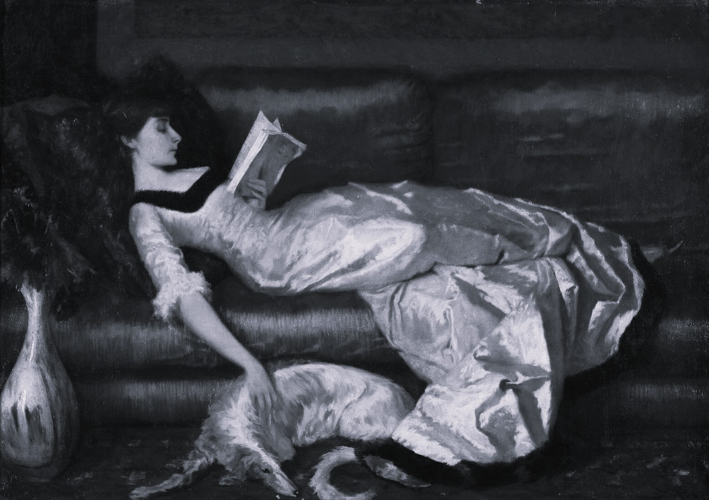

Vespertine Literary aims to unearth the starkly gothic facets of human existence through striking, authentic creative expression. By providing artists a space to explore the macabre, Vespertine Literary offers a twisted yet whimsical insight into both art and life.

Submit to the debut issue of Vespertine Literary, All That Slumbers! Whether you think of memories of holidays past, myths that haunt your dreams, or the horrors of returning to your childhood bedroom, we want to hear your stories of true terror and dread to welcome the holiday season.
© Vespertine Literary 2026